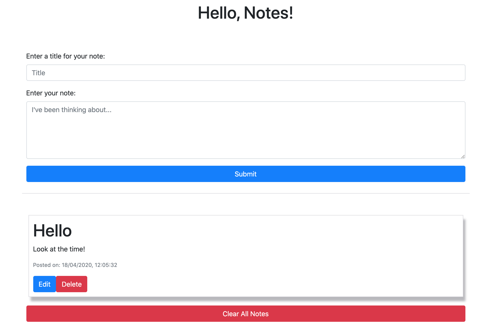

Hello, Notes!
Languages used: Javascript, HTML, CSS
Other tools: Bootstrap
Hello, Notes! is a web application that saves notes users make in session storage, which allows notes to persist even if the user quits their browser. Users are also able to edit and delete all notes.
Resources
